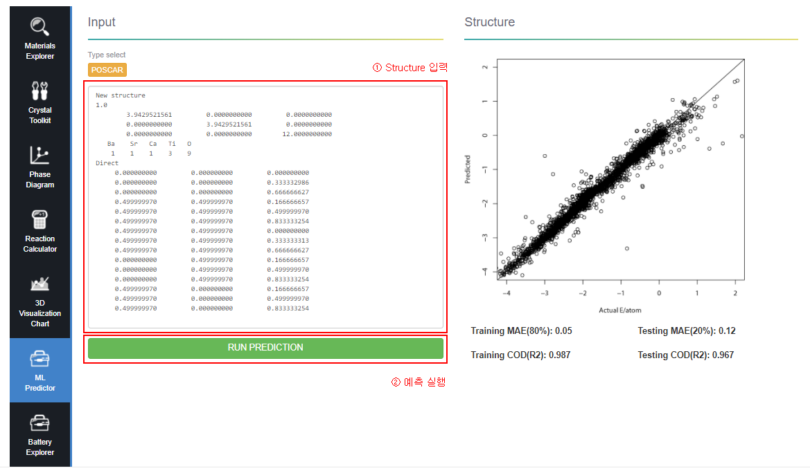

ML Predictor는 여러 시뮬레이션 데이터들을 학습해서 Structure 정보만 입력하면 그것에 대한 물성을 예측할 수 있는 서비스입니다.
빅데이터가 구축되면 분석을 통해 새로운 Knowledge를 얻을 수 있는데, 우리는 구축된 데이터를 학습시켜서 DB로 구축되지 않은 소재라도 물성을 예측할 수 잇는 서비스를 개발하였습니다.
이 분석 툴을 이용하면 10초 내외의 시간에 비교적 작은 오차로 소재의 물성을 알 수 있기 때문에 비용과 시간을 크게 줄일 수 있습니다.
ML Predictor
메뉴의 Analysis - ML Predictor 혹은 도구 아이콘 ML Predictor을 클릭하여 이동합니다.
소재 특화 사이트 ML Predictor 메뉴
화면 소개
text 입력폼에 Structure 구조를 입력 후 RUN PREDICTION 버튼을 클릭합니다.
예측 도구 소개
비 배터리 소재 예측 실행
기본적으로 Formation Energy per Atom (eV), Final Energy per Atom (eV), Volume (ų), Density (g/cm³) 그리고 Space Group Symbol 의 5종 Base Properties를 확인 할 수 있으며, 입력한 Structure에 대한 구조 또한 그래픽으로 표현됩니다.
비 배터리 소재 예측 실행
배터리 소재 예측 실행
만약 입력한 Structure의 정보가 Battery 연구에 사용되는 소재를 포함 하고 있을 경우 Base Properties에 더불어 Average Voltage (v), Gravimetric Capacity (mAh/g), Volumetric Capacity (Ah/l), Specific Energy (Wh/kg), Energy Density (Wh/l)의 추가적인 5종의 Battery Properties 예측 값 또한 확인 할 수 있다.